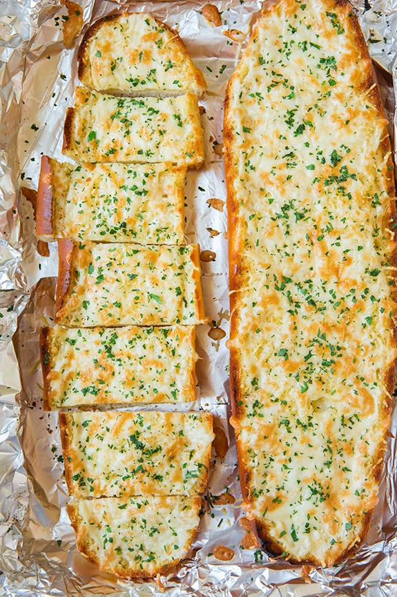

Garlic Bread

Description
It doesn’t get much better then a warm slice of cheesy garlic bread straight from the oven.
Perfect for dipping in marinara sauce or serving as a side to all your favorite pastas and soups.
Ingredients
- French or Italian Bread
- Salted Butter
- Olive Oil
- Fresh Gransulated Garlic
- Salt and Pepper
- Shredded Mozzeralla
- Grated Parmesan
- Fresh Parsely
Steps:
- Preheat oven and slice bread in half lengthwise.
- In a mixing bowl, stir together butter, olive oil, garlic, salt and pepper.
- Spread mixture over both bread halves, then wrap foil over bread and bake 10 minutes.
- Remove bread from oven and sprinkle with cheese.
- Bake homemade garlic bread until the cheese is golden and bubbly.
Return to Home